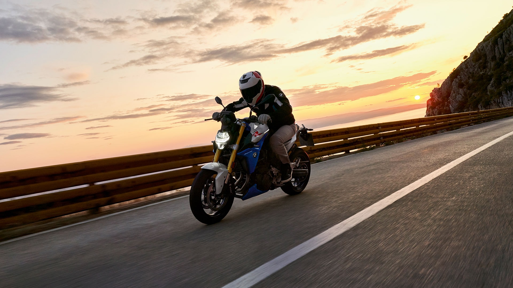
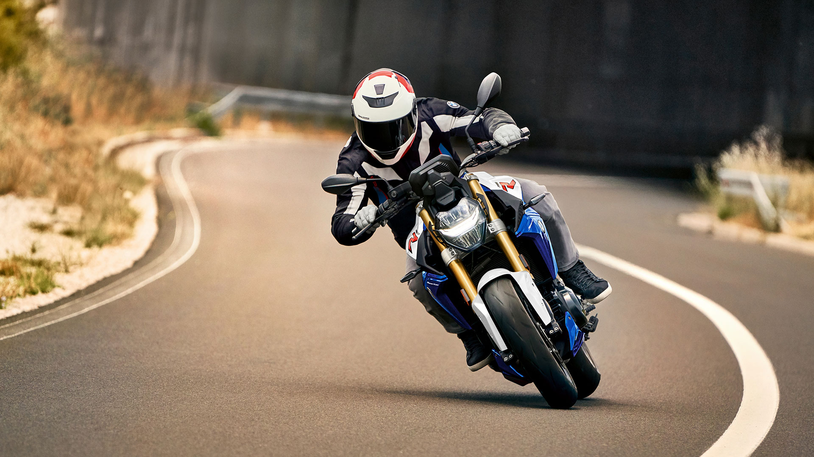

Phare de virage adaptif
Le phare de virage adaptatif de la F 900 R s'allume automatiquement dès que la moto dépasse les 7 degrés d'inclinaison. Des éléments LED séparés situés dans le projecteur principal déplacent la zone d'éclairage cible à l'intérieur des virages. Pour plus de confort et de sécurité à chaque virage.
Addaptée-Mais uniquement en matière d'ergonomie
L'ergonomie de la F 900 R est sportive et concentrée sur la roue avant. Ses six hauteurs de selle différentes, la manette réglable et le guidon haut en option permettent à tout un chacun de trouver sa position idéale. Le pare-brise est également disponible en version haute et offre ainsi une protection confortable contre le vent, même sur les trajets plus longs. Pour que tout le monde trouve la F 900 R qui lui convient le mieux. C'est aussi ce que nous entendons par Dynamic Roadster.
Pour un plaisir de conduite inegalé
Avec le mode de conduite Pro disponible en option, transformez encore plus rapidement chaque virage et chaque ligne droite en plaisir à l'état pur : ce mode comprend notamment les systèmes d'assistance de sécurité ABS Pro, Dynamic Traction Control (DTC), Dynamic Brake Control (DBC) et la régulation du couple de frein moteur (MSR). L'assistance au freinage apporte plus de sécurité lors du freinage et la nouvelle fonction MRS empêche la roue arrière de déraper ou de faire tampon lorsque vous mettez les gaz ou changez de vitesse spontanément. L'assistant de changement de rapport Pro et le châssis Dynamic ESA à réglage électronique combinent dynamisme, sportivité et confort – pour encore plus de plaisir de conduite.